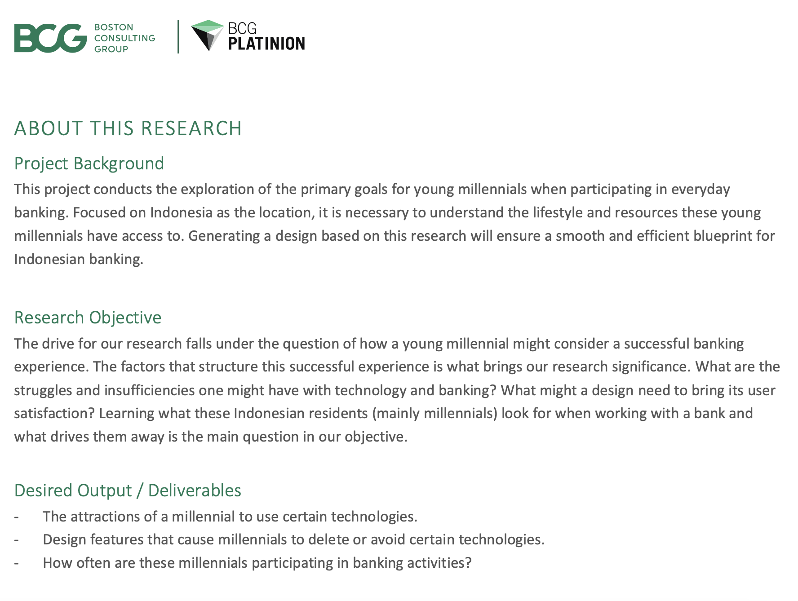
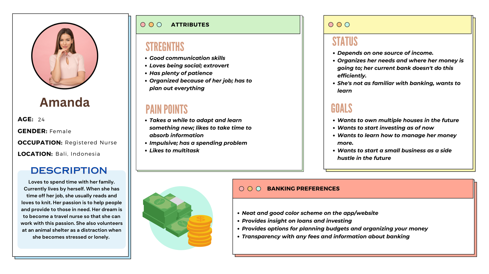

BCG Stragetic Design and Experience
·
Independent online project
Description: An Indonesian bank recently hired BCG to examine the present customer experience with regular personal banking. It's widely believed that the younger generation of millennials will soon make up the majority of the clientele, and businesses want to be prepared for this.
My mission: To help the client create appealing, appropriate, and cutting-edge banking options. I will undertake research on the underlying beliefs, actions, and motives of young millennials, particularly those in Indonesia.
Task 1:
As the strategic designer, I needed to come up with a research plan with different methods to present to my client.
Two methods are presented below describing the method, the timeline of the activy, the participant mix and the questions that will be asked:

Task 2:
Creating artifacts for these reserach activities, meaning detailed question and discussion guides for the interviews that will be conducted.
Here is the question guide that will be conducted for Activity 2, which is one-on-one interviews
It is important to create these guides to be prepared for any follow-up questions that are needed for an in-depth collection of data. These are open-ended questions where the interviewer (me) would use flexibly, to encourage the participant to tell their stories
Task 3:
After the research, I needed to identify key trends and points that generalize who I am designing for. Creating a user persona is the solution to this, where I created a hypothetical character aligning with the data that was collected from the activities.
This persona allows anyone to gain quick insights and empathy just by reading short summaries.
Some key points emphazied were:

As a millenial, she’s not as familiar with online banking and would like all the help she can get
Prefers a neat and smooth app/website for a better experience
Wants to get better at investing
Task 4:
Creating a concept poster to vizualize ideas and how they will work.
This concept poster represents a low fidelity model, where a simplified and quick version of my ideas are shown.
- My idea consists of the online banking app having the user participate in a questionare that will ask them about their banking preferences, life-styles, occupations, income etc. for a personlized experience.
- If the user feels uncomfortable answering through the app, connecting with an assistant on-site will also be available, allowing a stronger trust bond especially for new bankers.
- The app will then provide specialized tips, banking styles, and loan plans based on their questionare. These will also come with step by step banking plans for the user.
- For other services, there will be an online 24/7 AI assistant. The user will also have their personal assistant assigned to them based on their questionare for help during office hours.
- For a balance of flexibility and stronger connections, the user is welcomed to have their banking experience entirely through the app, but on-site visits are also encouraged to build stronger connections with their banking life.
Contact information:


This website was coded and designed by me from scratch on VScode!